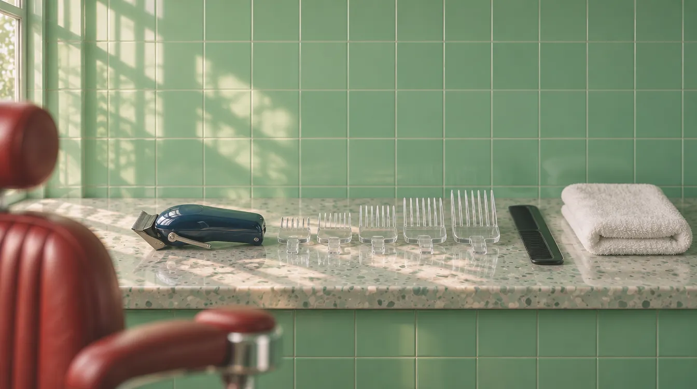
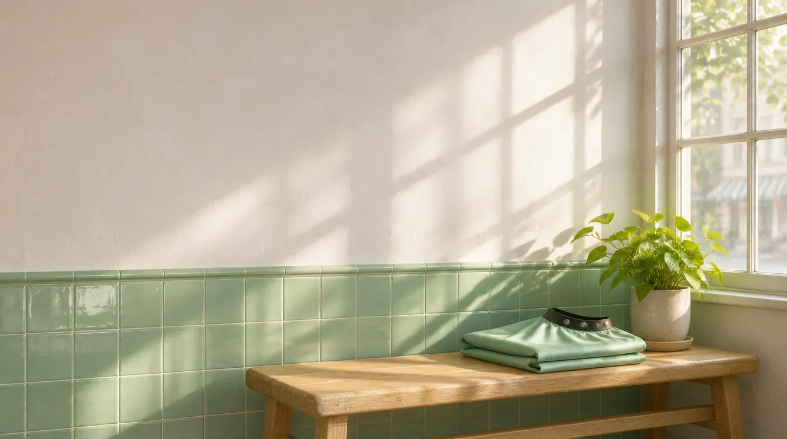
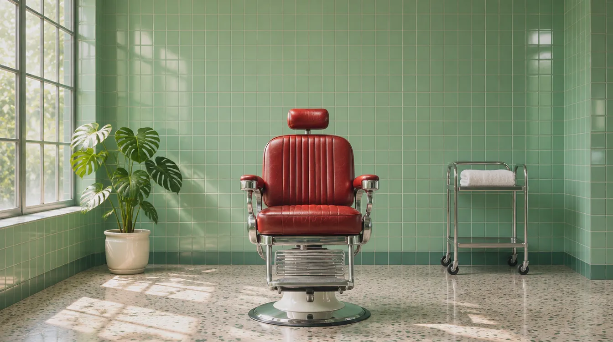

een barbier om de hoek.
Barbershop Ferry is een barbier aan de Stationsstraat in Waalwijk. Een plek om even te zitten, goed geholpen te worden en strak weer naar buiten te lopen.

Barbier in WaalwijkSfeerbeeldeen barbier om de hoek.
Barbershop Ferry is een barbier aan de Stationsstraat in Waalwijk. Een plek om even te zitten, goed geholpen te worden en strak weer naar buiten te lopen.
alles ligt klaar.
Tondeuse, opzetkammen, kam, een schone handdoek.

Sfeerbeeldkom binnen, ga zitten.
Een bankje, een cape, even wachten.
meer dan een knipbeurt.
Een barbershop is een bijzonder soort plek. Je komt voor je haar of je baard, maar je blijft even voor de rust. De cape gaat om, de tondeuse zoemt, en een tijdje hoef je niets anders dan stilzitten. Voor veel mannen is dat het enige kwartier in de week waarin iemand anders voor hen zorgt.
Het vak zelf is eenvoudig te beschrijven en moeilijk om goed te doen: een fade zonder lijn, een nek die strak blijft, een baard die bij je gezicht past, een scheerbeurt zonder irritatie. Dat vraagt om goed gereedschap, een vaste hand en tijd.
Barbershop Ferry zit aan de Stationsstraat 130 in Waalwijk: knippen, knippen met baard, baard trimmen en baard scheren. Loop gerust even binnen, of bel 06 28 71 89 27.

Omdat een fade pas mooi is zonder lijn.
Omdat een baard ook verzorging nodig heeft.
Omdat even zitten ook goed is.
dit verhaal vertelt Ferry zelf.
Ontwerpvoorstel: hier komt het echte verhaal van de zaak.

online je tijd kiezen.
Geen wachtrij, geen terugbellen: kies je dienst, een dag en een tijd, en je stoel staat klaar.
Hier komen foto's van de zaak, de stoelen en het werk van Ferry.

tot zo in de stoel.
Plan je afspraak online in een minuut, of bel even als je liever iemand spreekt. Je vindt Barbershop Ferry aan de Stationsstraat 130 in Waalwijk.